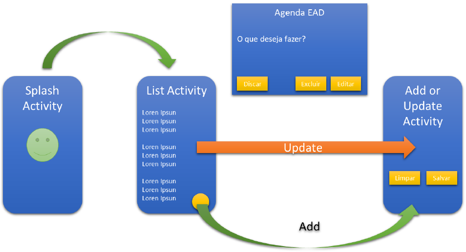
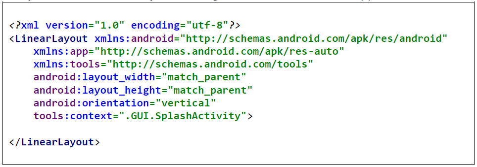
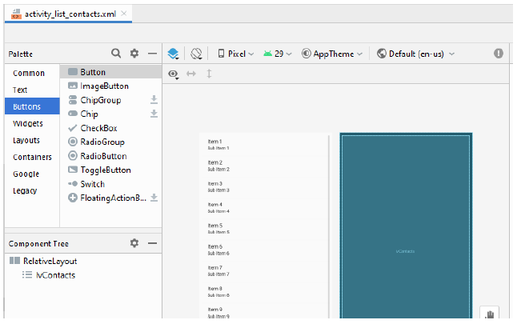
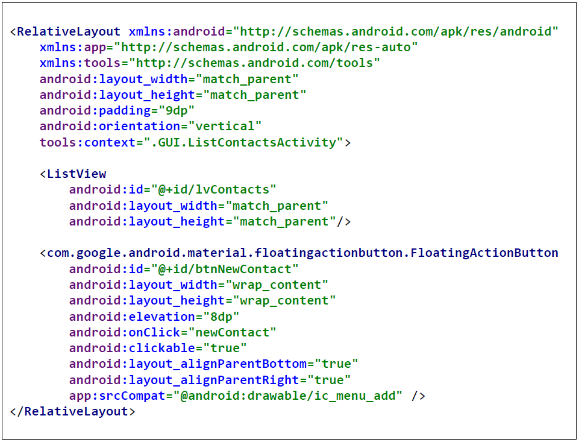
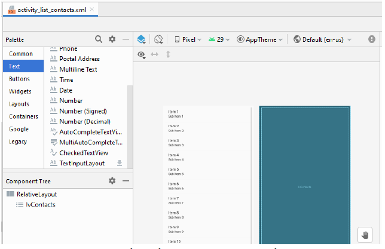
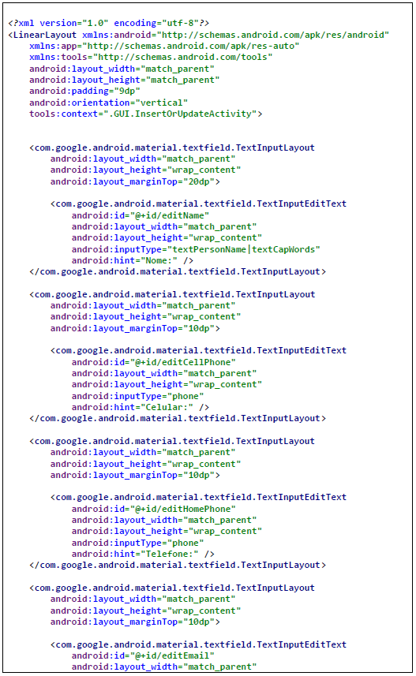
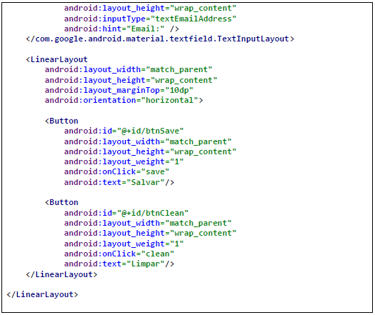

home
parte 2
parte 3
parte 4
parte 5
parte 6
parte 7
Android com Banco de Dados – Parte V
1 INTERFACE GRÁFICA (GUI)
A agenda proposta seguirá o fluxo abaixo (figura 1):

-
Splash Screen
Utilizada como uma tela de propaganda ou para rodar processos em backgroud. Ela vai
permanecer ativa por 3 segundos e em seguida ira chamar a ListActivity.java.
-
ListActivity
Essa tela vai conter a ListView que exibirá a lista de todos os contatos em ordem alfabética. Também faremos
uso do FloatingActionButton da biblioteca Material Design do google, que ficará flutuando sobre a nossa
ListView, ao clicarmos nesse botão, o app abrirá a activity AddOrUpdateActivity para realizarmos a inclusão
de um novo contato a nossa agenda.
Por fim, vamos adicionar um evento de clique em cada item (contato) que está nessa lista
(OnItemClickListener), para que possamos deletar, editar e até mesmo discar para o celular do contato
clicado. A clicar no contato será exibido AlertDialog que nos permitira executarmos as ações nele
implementadas.
- Opção de Deleção
- Opção de Update
- Opção de Discagem
-
AddOrUpdateActivity
Nessa Activity estará o formulário para adicionar um contato, bem como, para editar os dados de um contato,
controle esse realizado pelo programador.
CODIGO FONTE DAS ACTIVITIES DA AGENDA
-
SplashActivity
Utilizada como uma tela de propaganda. Ela vai permanecer ativa por 3 segundos e em seguida ira chamar a
ListActivity.java.

-
ListActivity
Nesta activity temos a inserção de dois novos elementos, o primeiro, é o RelativeLayout qye nos permite o
uso do FloatActionButton sobre o elemento ListView que já é conhecido.
Para inserir o FloatingActionButton, deve-se arrastar o elemento para a Activity e aceitar o download
da biblioteca do google que será inserido no arquivo de configuração do Gradle. Para isso, clique na paleta
e selecione a opção Buttons e localize o FloatActionButton (figura 2) e arraste-o sobre sua
ListView.


-
AddOrUpdateActivity
Nesta activity teremos a inclusão de um novo controle chamado de TextInputLayout também da biblioteca
Material Design do google.
Para inserir o TextInputLayout, deve-se arrastar o elemento para a Activity e aceitar o download da
biblioteca do google que será inserido no arquivo de configuração do Gradle (caso já tenha sido importado
não será solicitado). Para isso, clique na paleta e selecione a opção Text e localize
TextInputLayout (figura 2) e arraste-o para sua activity.


